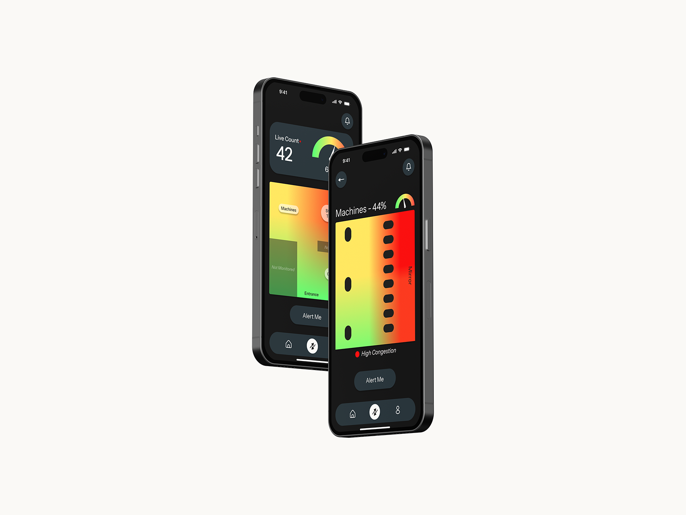
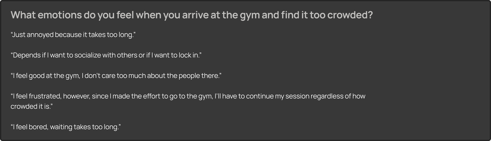
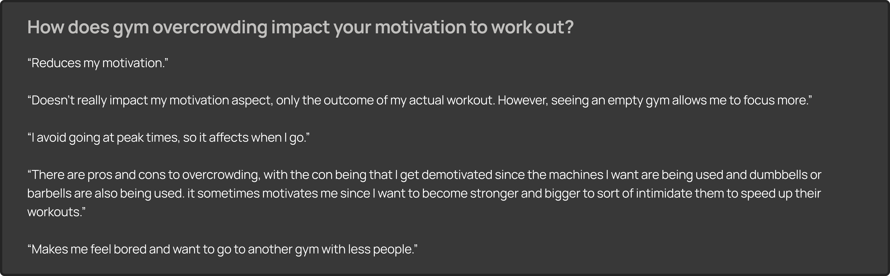
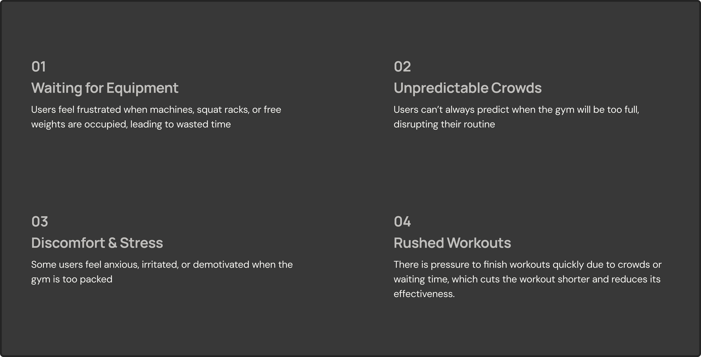
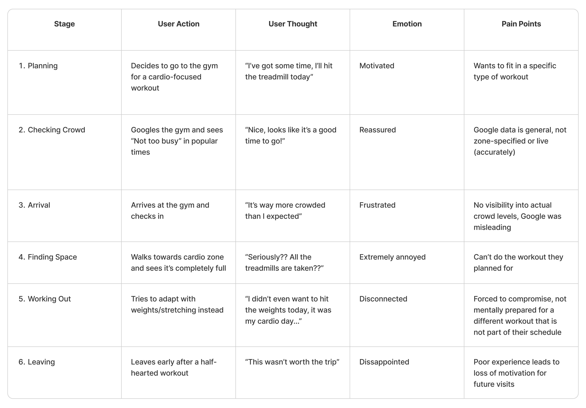
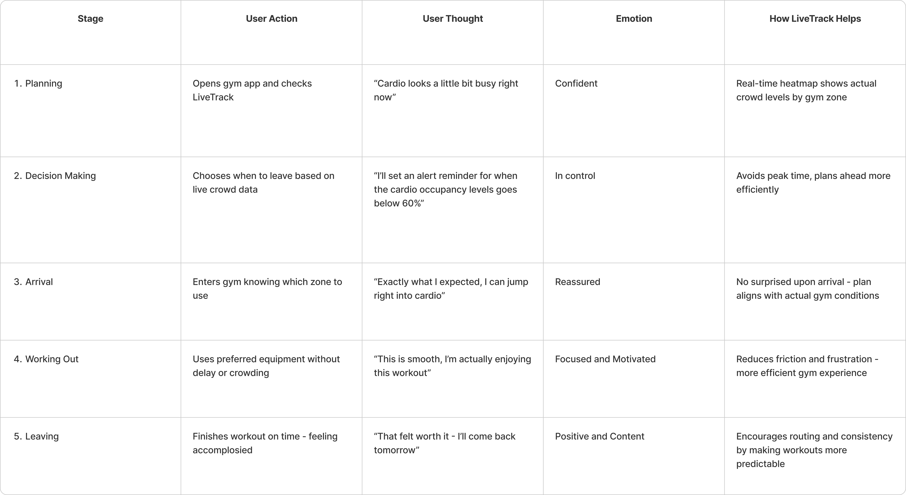
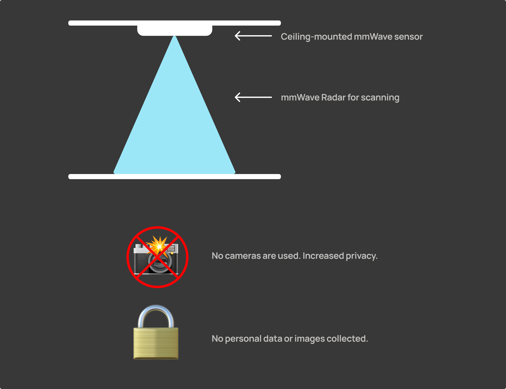

This website is best viewed on a larger screen. Please visit on a desktop or laptop for the full experience.
LiveTrack
March 2025 - April 2025
ROLE
Product Designer
User Researcher
SKILLS
User Research
Competitor Analysis
Prototyping
TOOLS
Figma
Perplexity
ChatGPT
Microsoft Excel
TYPE
Solo Design Project
OVERVIEW
For many young adults, going to the gym is a part of staying healthy and regulating their stress. However, overcrowded gyms can disrupt that experience and even cause anxiety within new gym members. Current solutions only address crowd levels and not crowd density, unintentionally misleading the users. Facing this challenge in my personal life, I decided to design a feature that allows users to see the crowd distribution throughout the gym, right at their fingertips.
THE SOLUTION

LiveTrack is a feature built into any gym app that helps gym-goers get a clear sense of how busy the gym is at any given time. It shows a real-time heatmap of the gym floor and informs the users how crowded each section is and even breaking down the activity within specific zones like cardio, strength, or stretching. Instead of showing up and hoping for the best, users can check LiveTrack before heading out, helping them plan ahead of time, avoid frustration, and stay on track with their fitness goals.
USER RESEARCH
I started with secondary research using Perplexity, which gave me quick insights along with source links that allowed me to cross-reference for reliability. For my primary research, I created a Google Form and collected responses from around 15 users. These were some of the key responses:


After conducting the user research, 4 main pain points emerged, which set the foundation for my solution:

I also conducted a competitor analysis to understand what current solutions exist to best address this problem, and the top 3 I found were from Anytime Fitness, PureGym, and Google. These solutions operate in the same way, meaning that it only shows the percentage occupancy in the gym, but it doesn’t show the crowd distribution throughout the gym.
PRE-USER JOURNEY MAP

Looking at this journey, it's clear how quickly a motivated gym visit can turn into a disappointing experience. What stood out most was how users genuinely try to plan ahead, but still end up frustrated because the information they rely on isn't accurate or detailed enough, especially when it comes to specific zones like cardio.
POST-USER JOURNEY MAP

THE HEATMAP

I used the concept of heatmaps and applied it to the gym’s floor plan, showing the crowd distribution in the gym. This inspiration came from the fact that I was seeing these heatmaps everywhere for traffic. I applied the same concept but on a much smaller scale.
HOW THIS WORKS

Designing LiveTrack was a fun and creative challenge, but what also interested me was figuring out how to make it actually work in the real world, and that curiosity led me down a deep rabbit hole of research.
When it came to the real-time heat map, I focused on finding a solution that’s affordable, realistic, and respects user privacy. The best option I found was mmWave radar sensors. These use high-frequency radio waves to detect how many people are in a space and where they are, without any cameras. They work by sending out signals and measuring how they bounce back, and are usually mounted on ceilings or high walls to cover large areas. Because they don’t collect images or personal data, they comply with privacy standards and is one of the key reasons I chose this method.
KEY TAKEAWAYS
Working on LiveTrack was genuinely an enjoyable experience, especially because it tackled a problem I personally face often.
One of my biggest takeaways was the importance of user research. Initially, I approached this project based on my own assumptions and pain points. After conducting user surveys and gathering feedback, I uncovered issues that I hadn’t considered, which helped me discover pain points that helped me shape a more thoughtful and inclusive user-centered design.
I’d love to bring this concept to life through code one day and test it out in a real environment.